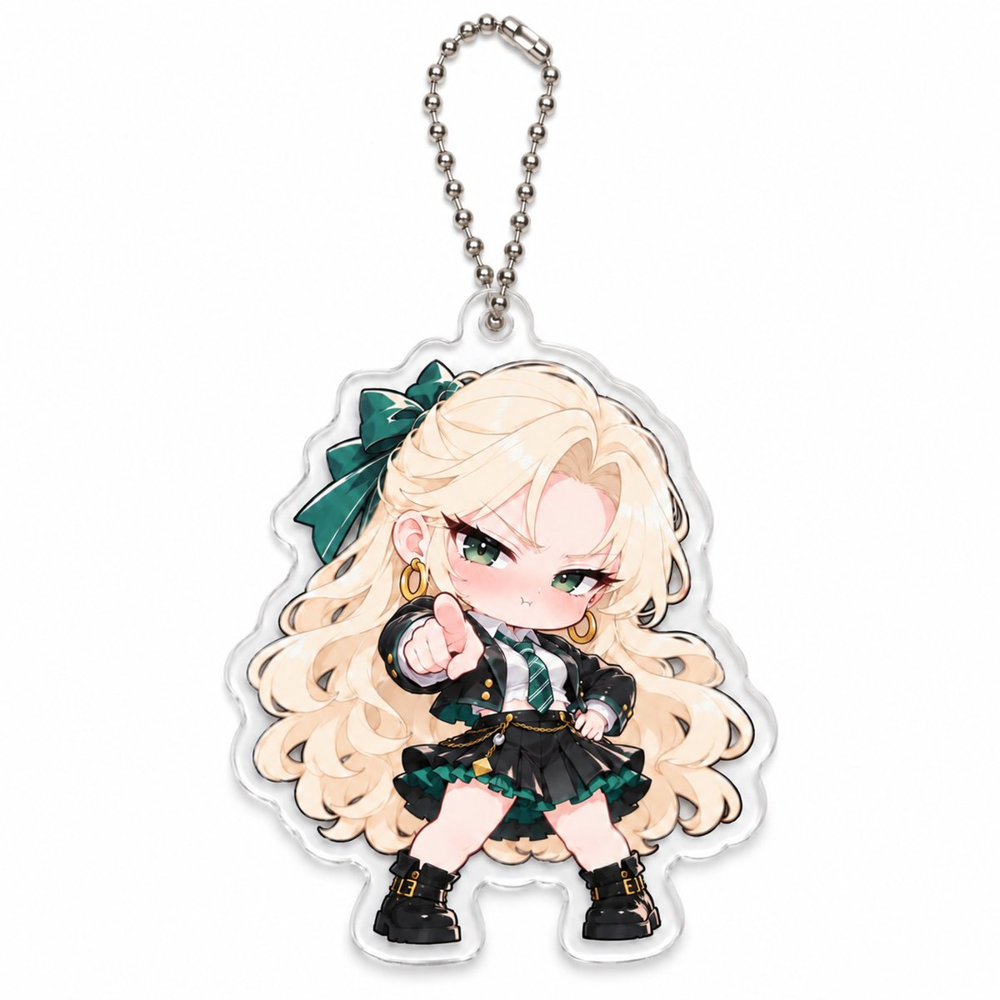
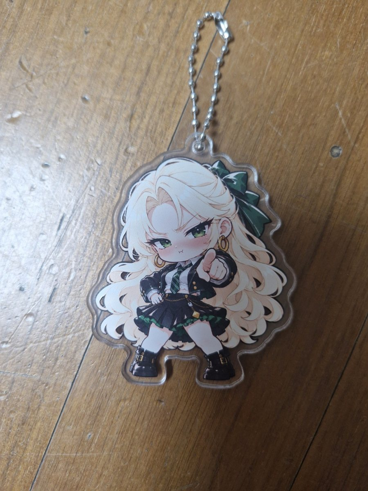
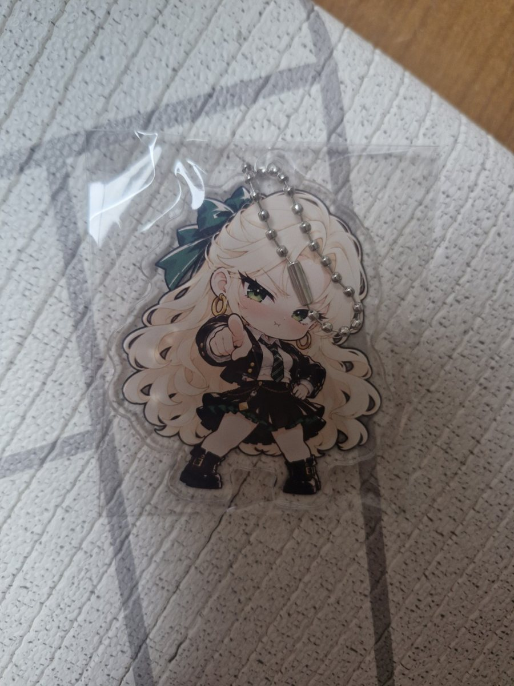

TS말포이 아크릴 키링 · 여자 말포이 '뭘 봐?' 키링
금발에 초록 리본, 손가락으로 앞을 가리키며 "뭘 봐?" 하는 표정. 요즘 유행하는 TS말포이(여자 말포이)를 귀요미 그림체로 담은 아크릴 키링입니다.
판매자 예전이 직접 작성 · 가격 확인일 2026년 11월 5일 (쿠팡 판매가는 바뀔 수 있습니다)

한눈에 보는 요약
| 상품명 | 예전 TS 말포이 아크릴 키링 볼체인 가방 파우치 장식 |
|---|---|
| 이렇게도 불러요 | TS말포이 키링, TS 말포이 키링, 여자 말포이 키링, 말포이 굿즈, 성전환 말포이, 말포이 TS, 뭘봐 말포이 |
| 디자인 | 금발 · 초록 눈 · 초록 리본 · 검정·초록 의상 · 손가락 포즈 (단일 디자인) |
| 크기 | 아크릴 본체 가로 약 61mm × 세로 약 70mm (볼체인 제외) |
| 구성 | 아크릴 키링 1개 + 은색 금속 볼체인 · 개별 포장 |
| 제작 | 대한민국 · 제조자 예전 (자체 제작) |
| 가격·구매처 | 7,900원 · 쿠팡 판매자 예전 · 상품번호 9787774178 · 로켓그로스(쿠팡 물류센터 출고) |
실제 사진
대표 이미지는 판매용으로 정리한 그림이고, 아래는 실물 사진입니다. 투명한 아크릴 테두리 안에 캐릭터 그림이 들어 있고, 은색 볼체인이 달려 있습니다.


TS말포이 뮤비 '뭘 봐?'
같은 제작자가 만든 TS말포이 케이팝 뮤비 '뭘 봐?'에서 이 캐릭터가 어떤 성격인지 볼 수 있습니다. 해리포터 시점으로 보는 츤데레 말포이가 "뭘 봐?" 하다가 얼굴이 빨개지는 내용입니다.
자주 묻는 질문
TS말포이 키링은 어디서 사나요?
쿠팡에서 판매자 '예전'의 상품(상품번호 9787774178)으로 살 수 있습니다. 7,900원이고 로켓그로스 상품이라 쿠팡 물류센터에서 출고됩니다. 쿠팡에서 'TS말포이'나 '말포이 키링'으로 검색해도 나옵니다.
여자 말포이 굿즈나 키링도 이건가요?
네. 여자 말포이, TS 말포이, 성전환 말포이처럼 부르는 이름은 달라도 금발에 초록 리본을 한 여자 말포이 밈 캐릭터를 담은 키링입니다.
'뭘 봐' 말포이 키링이 이건가요?
손가락으로 앞을 가리키며 "뭘 봐?" 하는 표정의 TS말포이 키링입니다. 뮤비와 같은 TS말포이 캐릭터 콘셉트입니다.
크기와 구성은요?
아크릴 본체 가로 약 61mm, 세로 약 70mm(볼체인 제외)입니다. 아크릴 키링 1개와 은색 볼체인이 개별 포장되어 옵니다. 측정 방법에 따라 약간 차이가 있을 수 있습니다.
공식 해리포터 굿즈인가요?
아닙니다. 인터넷 밈 TS말포이를 판매자 예전이 국내에서 자체 제작한 팬메이드 굿즈입니다. 원작, 제작사, 배우와 관계없는 비공식 상품입니다.
어디에 달 수 있나요?
가방, 파우치, 필통, 열쇠 등에 달 수 있습니다. 사용 전에 볼체인 연결부를 확인하고, 강한 충격·압력·고온은 피해 주세요.
상세 이미지 속 가방·파우치·열쇠 등은 구성품이 아닙니다. 모니터 환경에 따라 색상이 다르게 보일 수 있습니다.